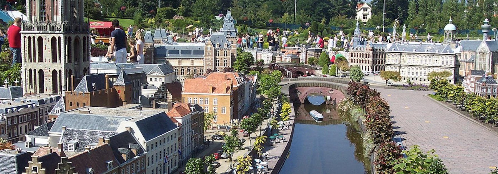

Klik hier voor de website van Madurodam.
Madurodam is een Nederlandse miniatuurstad. Door middel van maquettes van gebouwen geeft het een beeld van een Nederlandse stad en de Nederlandse samenleving. Alles is op schaal van 1 op 25 nagebouwd. Er zijn onder meer gebouwen uit historische binnensteden, moderne woonwijken, een luchthaven, wegen, kanalen, havengebieden, natuurgebieden en landerijen.